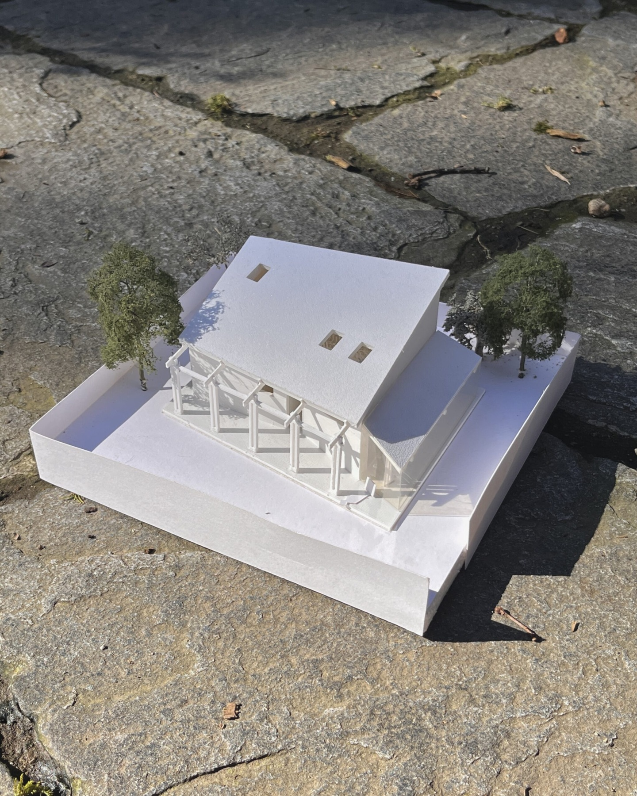
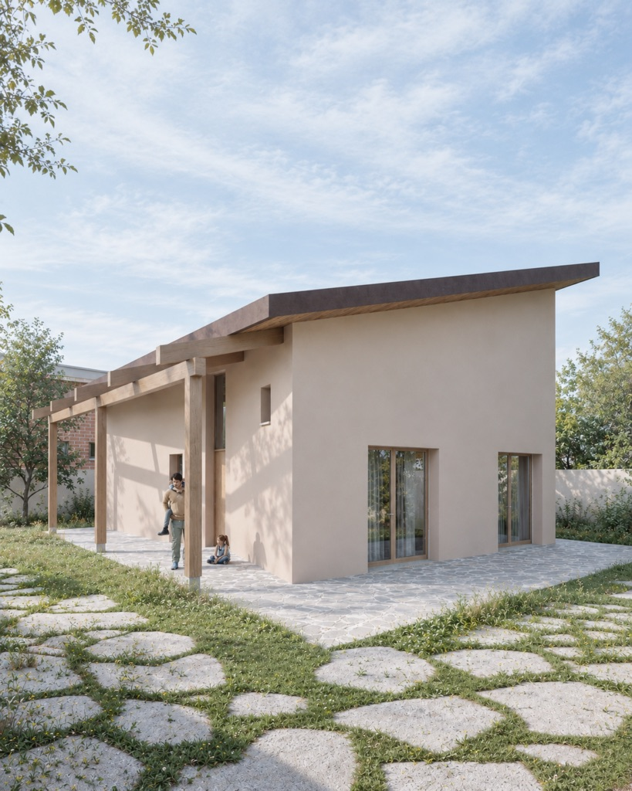
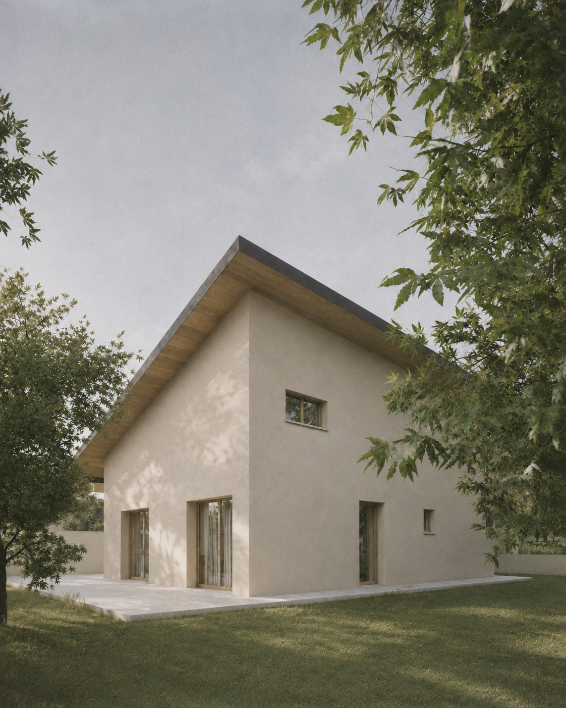
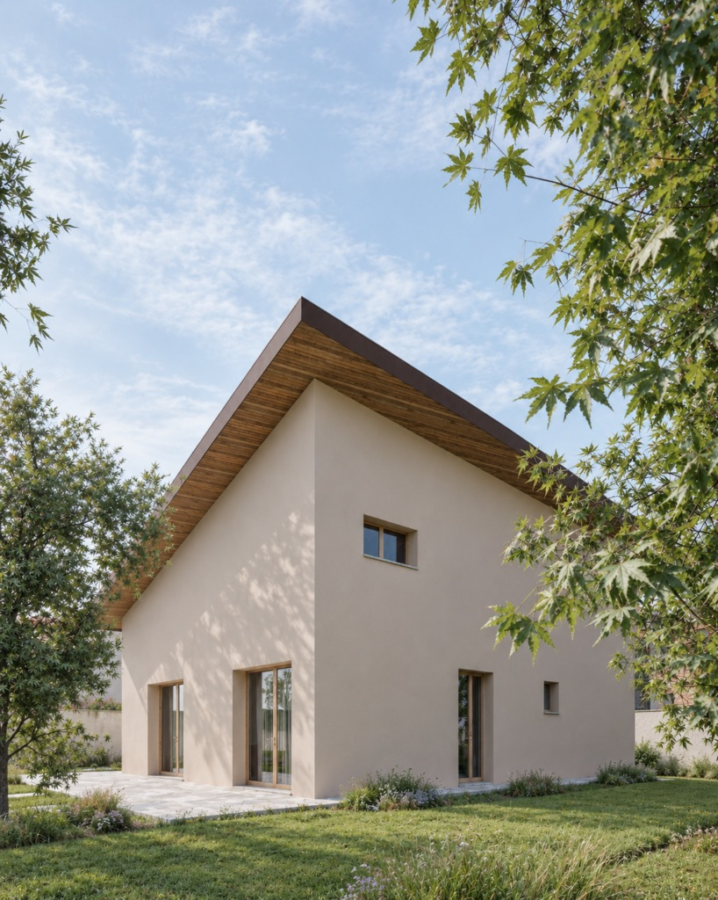
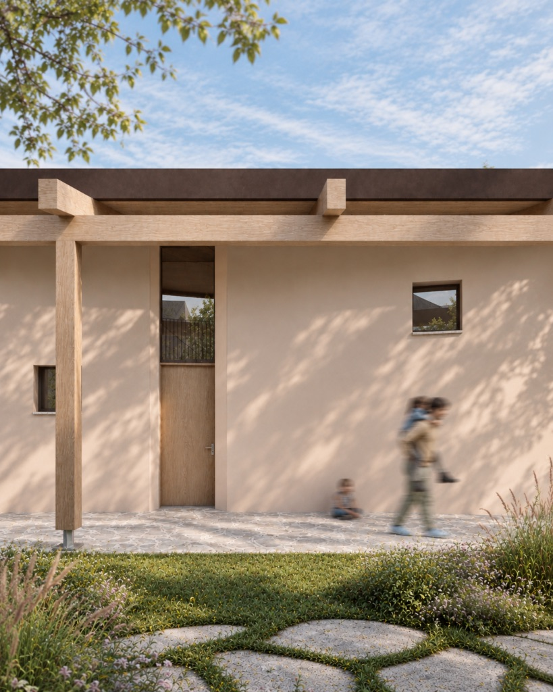

Villetta minima
- Luogo
- Caronno
- Anno
- 2026 – in corso
- In collaborazione con
- Arch. Giuseppe Brollo
Questa piccola casa si inserisce in un lotto fortemente condizionato dai vincoli edilizi, tra le distanze dai confini e quelle dagli edifici esistenti. Il tetto in legno si posa sull’abitazione come un foglio, orientandosi a sud per massimizzare l’esposizione solare e ottimizzare la produzione dell’impianto fotovoltaico. Il suo aggetto, allo stesso tempo, protegge gli ambienti interni dall’irraggiamento estivo.
All’interno, lo spazio è organizzato in tre fasce parallele: la zona giorno, il blocco dei servizi e la zona notte. La zona giorno è senza dubbio l’ambiente più caratterizzante della casa: si sviluppa su una doppia altezza ed è completata da un soppalco, destinato a diventare uno studiolo e pensato per raccogliere e rendere più intimo lo spazio della cucina.
Al centro, un grande lucernario diventa il fulcro luminoso dell’abitazione. Insieme alle ampie portefinestre laterali, porta la luce naturale in profondità, mettendo in relazione gli ambienti interni con il giardino.




